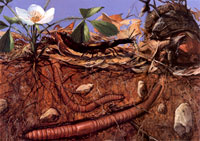
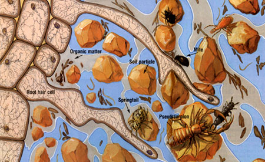
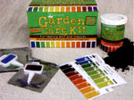

It's a fundamental axiom of organic gardening and farming, and once you understand what "feeding the soil" means, you'll also understand why organic methods, and no-till techniques in particular, work so well.
Even though you can't see most of it, a complex soil food web lives in your garden; it's teeming with earthworms, mites, bacteria, fungi-all kinds of mostly microscopic, interdependent organisms that release mineral nutrients and create the loose soil structure crops need to thrive. Beneficial mycorrhizal fungi (see "The Magic of Mycorrhizal Fungi," Page 24) grow in and around plant roots, mining subsoil for nutrients and water to share with your crops. Other microorganisms prevent diseases and help plants withstand insect attacks.
Your crops actually help feed all this underground life. Ray Weil, a renowned soil scientist at the University of Maryland, College Park, says that while plants invest a "substantial amount of their photosynthesis in feeding soil microbes, the plants are obviously getting benefits back."
Think of plants, with their green chlorophyll, as little solar-powered engines that pipe a steady flow of carbohydrates out through their root hairs. Between 20 percent and 40 percent of a plant's total carbohydrate production is released into the soil through its roots. In the nutrient-rich area around the root hairs, microscopic bacteria and fungi feed and multiply. Nematodes (tiny worms) and other critters move in to feed on the bacteria; in turn, the root hairs absorb nutrients released by the concentration of microbes.
But this complex, mostly invisible soil ecosystem can be damaged easily. Chemical fertilizers, dehydrated chicken manure or high-nitrogen blood meal can burn tender root hairs, and tilling or plowing destroys soil texture, disturbing the layered web. Leaving the soil bare shuts off the carbohydrate food supply; lack of moisture and ultraviolet rays kill some of the organisms that dwell in the surface layer. (Mother Nature almost never leaves the soil uncovered; only on farms and in gardens do we see naked soil.)
More and more farmers and gardeners are learning new ways to protect and promote the development of this amazing soil food web. They foster the natural fertility that comes from a healthy food web, and you can do the same.
First, minimize plowing, tilling and digging. Second, use compost, grass clippings, leaves and other organic mulches on a regular basis to promote and sustain the soil food web. Third, always keep the soil covered with live crops or, at minimum, an organic mulch. Whenever you are not growing a food crop, sow a cover crop so the carbohydrate pipeline isn't shut off.
Every time the soil is tilled, surface-layer organisms are buried, threads of beneficial fungi are broken and earthworm tunnels are destroyed. Steve Diver, an agriculture specialist with National Sustainable Agriculture Information Service (ATTRA), says plowing can bury plant debris and topsoil up to 14 inches deep-where oxygen levels are too low for decomposition.
The buried debris then acts as a physical barrier to the movement of water upward and downward. Tilling or plowing also introduces excess oxygen that causes organic matter to decay too fast, and tilling causes plants to give off more carbon dioxide, contributing to global climate change.
"Even if you cultivate only 2 to 3 inches deep," says Weil, "more damage is done than good." Worm channels and root paths that facilitate water absorption are destroyed, and soil clumps or aggregates are broken up, leaving little air space in the top layer. Then, raindrops pound on the soil particles, pushing them even closer together, creating an impenetrable, crusty surface.
Weil says good garden soil should be about half porous space occupied by air and water. Compacted soil, created by rainfall on bare ground and the use of heavy equip ment or repeated walking upon the ground, has much less space for air and water. That's a recipe for crop failure.
Weil's specialty is managing microbes on farmland, but he handles the soil food web in his home garden the same way. He makes permanent beds that are 4 feet across, so all work can be done from the sides without having to ever step on the soil.
The object is to avoid walking on the soil in the beds, or disturbing it or any plant roots in other ways. Diver says, "The roots left in the ground are food and shelter for microbes and earthworms." To incorporate compost into the soil, he suggests spreading it across the surface with a rake and covering it immediately with mulch. "The worms will move the compost into the soil."
Weil advocates a no-till/cover-crop approach to microbe management. "Start by applying a layer of compost and mulch if the soil is decent," he says. "The soil is not compacted if you can push a wire flag 12 inches into wet ground."
If the soil is severely compacted or poorly drained, build raised beds (see directions for building your own, "For Compacted Soil," below). Weil likes to begin in late summer or early fall by staking out the beds and planting a cover crop of a mixture of rye and hairy vetch.
The following spring, he uses a scythe to cut the cover crop (electric or gas-powered weed trimmers work well, too), cutting as close to the surface as he can and spreading the debris to an even thickness over the bed with a rake. [You also could let Mother Nature handle this job by using a less winter-hardy crop such as oats, which will grow strongly in the fall and die in the winter in U.S. Department of Agriculture Hardiness Zone 6 and north, and in much of Zone 7.]
"The best mulch will be had," Weil says, "if the cover crop is allowed to grow until it 'heads out' or flowers, and if high-residue cover-crop species (such as rye) are included in the mix." However, if the cover crop residue is too thin to completely cover the soil, Weil recommends spreading a couple of inches of mulch to cover the soil well. To set out transplants, he simply makes a hole in the mulch and digs out enough soil to accommodate the root ball. The soil is replaced, and mulch is pushed around the transplant. Seeds can be planted by making a narrow part in the mulch with a rake, then drawing a small furrow with a pointed stick in which to sow the seeds. If the soil is too firm, Weil pulls an old meat hook or curved crowbar through it like a single tine on a harrow; the zone of disturbed soil need be only a couple of inches wide.
Once a permanent bed is established, feed the soil food web regularly. Elaine Ingham, president of Soil Foodweb Inc., a firm that specializes in growing plants without pesticides and inorganic fertilizer, says the best way to manage a healthy microbial ecosystem in a home garden is to routinely apply organic material such as compost.
Ingham suggests gauging the amount needed by what has disappeared from the soil during the previous season. Generally, adding one-half inch to 1 inch of compost every spring will be plenty. In hot climates, where decomposition is rapid, or in regions with heavy rainfall or sandy soil, make at least two 1-inch applications, one in early spring and the second in late summer or early fall.
Beyond the obvious benefits of suppressing weeds and preventing soil crusting, mulch helps maintain the soil food web. Mulch dramatically increases the amount of rainwater that enters the soil and decreases the amount of water that runs off the surface. Runoff takes soil with it, damaging the food web. Even modest mulch or cover crop coverage (10 percent to 30 percent), Weil says, substantially improves rainfall saturation and erosion control. (In some areas, mulch may keep the soil too wet or cool, in which case you can rake some of it back to allow the soil to warm up and dry out.)
Organic mulch also feeds soil microbes. Earthworms move organic matter from the surface down to root zones where it can be used by bacteria. Many diseases are prevented or slowed by beneficial fungi living in mulch. A North Carolina State University study showed that only 3 percent of tomatoes mulched with composted cotton gin trash became infected with Southern blight, a fungal disease, compared to 66 percent of unmulched control plants. The composted mulch was an ideal breeding ground for beneficial fungi (Trichoderma), which killed or prevented the blight. Numerous disease-causing bacteria and fungi are found in the soil, but a healthy, diverse soil food web, nourished by mulch, allows beneficial microbes to naturally control or eliminate those that cause problems.
Start with a 3-inch to 6-inch layer of organic matter (tell your neighbors you want their bags of clean grass clippings and leaves). As the material rots and compacts, add more to maintain the depth.
If you don't grow cover crops, mulch thickly so microbes and earthworms have cover and a food supply during the winter. Instead of discarding autumn leaves, shred them with a lawn mower and use them to mulch beds. Other easy-to-find mulch materials include hay, grass clippings and wheat straw.
Cover crops are the web's best friend. They protect bare soil, add nutrients and offer a stable environment for microbes and earthworms when ground is fallow. Cover crops help reduce the harmful effects of erosion from rain and wind, and, by moderating soil temperature, prevent heaving caused by alternate freezing and thawing. As cover-crop roots decay, they leave channels for new plant roots to find.
While Weil favors a legume-grass mixture (a hairy vetch-and-rye combination) for cover crops, Diver favors clovers. "I love crimson clover because it has such a pretty flower," Diver says, "and subterranean clover because its plant residue is very effective at suppressing weeds." He says the effectiveness of oilseed radishes as a cover crop also has been studied in cold climates. The radishes endure frigid winters, send taproots deep into the soil and manufacture glucosinolates that repel parasitic nematodes. Glucosinolates are sulfur compounds found in the brassica family, including radishes, that act as biofumigants for the soil. Consider using a brassica cover crop if pest nematodes are a big problem in your garden. (Some nematodes attack plants while others help control soil-dwelling insect pests such as lawn grubs. This second type can be purchased and introduced to the garden.)
It's important to match cover crops to your region's seasonal growing cycles. Some covers, such as buckwheat or sorghum, thrive during hot summer months, while others, such as oats or winter rye, will grow only when temperatures are barely above freezing. And if you are going to rake, dig or till in a cover crop, Weil cautions, do it at least 10 days before planting. "Some plant residues have short-lived alleopathic or ammonium-release effects, which could interfere with crop seed germination, as well as weed seed germination," he says.
To learn which cover crops will work best in your region's seasons, MOTHER highly recommends the online e-book, Managing Cover Crops Profitably. Another resource is your local farm/seed store.
Doreen Howard has been building her own soil food web for more than 20 years. When not in the garden, she lectures and writes about sustainable gardening.
Mother Earth News
|
 Michael Rothman Fertile soils should be about 50 percent air (shown in grey) and water (blue). Tiny mites, springtails and other critters move through the spaces, feeding on organic matter. (Drawing scale is 11 times actual size.) |
 Michael Rothman |
 |